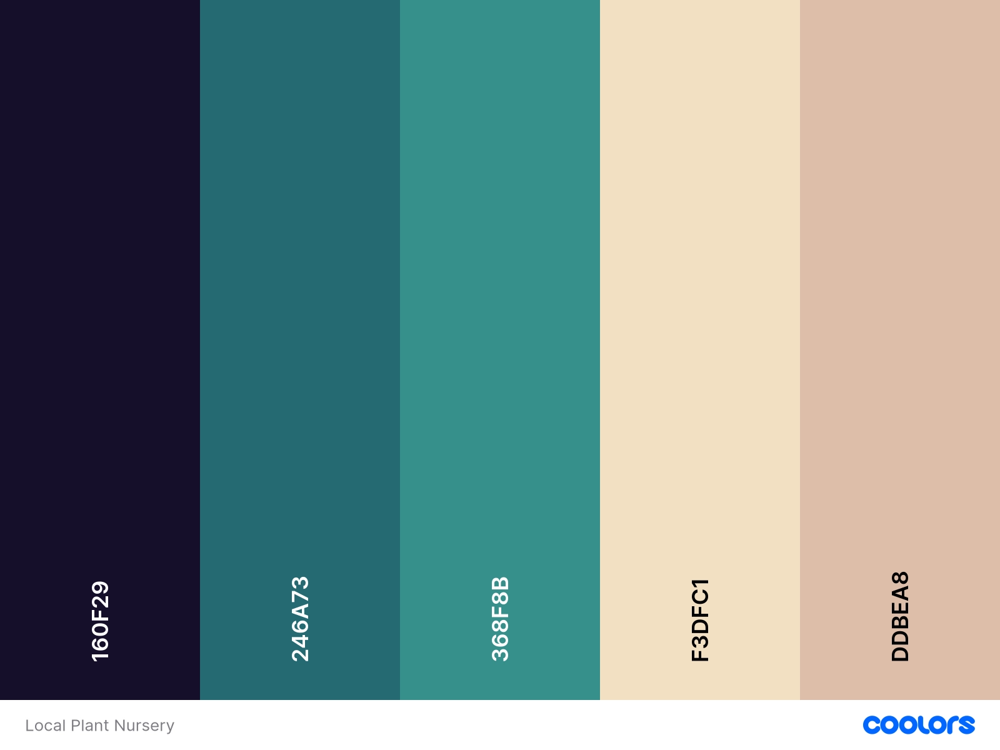

Site Name
Local Plant Nursery | plantnursey.com
This name reflects the primary goal of the site, which is to provide local gardening resources and plant sales.
Site Purpose
The website will showcase a local nursery's plant offerings, offer gardening tips, and allow customers to contact the nursery.
Scenarios
- What types of plants are available for purchase this season?
-

- How can I contact the nursery to inquire about specific plant care tips?
Color Schema
Typography
- Roboto - Used for body text and paragraphs.
Wireframes
Wireframes for the home page layout: